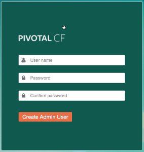
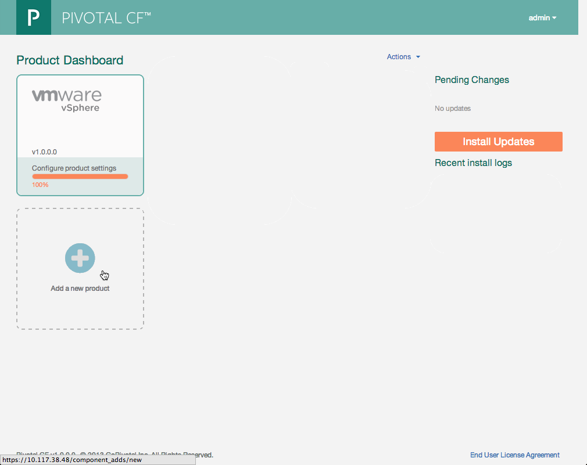

Follow these steps to configure the Pivotal CF Installer. This installer runs in the VM you created in the previous installation steps, which you must complete before completing the steps in this section. See Deploying the Pivotal CF Installation Virtual Machine.
- Open a Web browser to the IP address assigned to the Virtual machine.
The Pivotal CF Logon page displays. ?? is this the correct initial screen? Also, this image doesn't export.
 - Enter the credentials for the administrative user and click Create Admin User .
The Pivotal CF Installation page displays.

?? verify screen shot
======================================Simon video # 2: - Click Add a new product.
The Add Products screen displays. - In the Upload a Product box, click Choose File.
A file browser window opens. - Browse to the tar file containing your Pivotal AX software. ??name of file?? and click Open.
Under Import Component, click Add.
The components are uploaded to the Pivotal CF Installer virtual machine.
When the upload completes, the Pivotal CF Installer home page displays and now includes a box for Pivotal AX. - In the VMware vSphere box, click Configure.
- The VMware Infrastructure configuration page displays.

Select vCenter credentials and enter the following user information:
Parameter Description IP Address IP address of the vCenter server where your Pivotal AX virtual machines will be created User Name User name for access to the vCenter server. The user should have privileges to create and delete virtual machines and folders Password Password for access to the vCenter server - Click Save.
Select vSphere configuration. Using the values you defined when Configuring the vSphere Environment, enter the following resource information:
Parameter Description Network Name The name of the Network as defined in your vSphere congifuration Datacenter Name The name of the datacenter as defined in your vSphere configuration Cluster Name The name of the Cluster as defined in your vSphere configuration Datastore Name The name of the datastore as defined in your vSphere configuration Resource Pool Name (Optional) The resource pool where you will deploy Cloud Foundry - Click Save.
Select Network configuration and enter the following network information. The installer uses this information when creating the virtual machines for your Pivotal AX installation.
Parameter Description Subnet A valid range of IP addresses that vSphere can use to provision virtual machines. Use CIDR notation to enter the range.
For example:
172.16.64.1/24Reserved IP Ranges A list of IP addresses that you do not want provisioned by vSphere. List the IP addresses separated by commas. You can also specify a range of addresses. For example, the following entry:
172.16.64.1-172.16.64.3
excludes the following IP addresses:
172.16.64.1172.16.64.2172.16.64.3
DNS One or more valid Domain Name Servers to be used by the provisioned virtual machines Gateway Gateway to be used by the provisioned virtual machines - Select NTP Server to configure a Network Time Protocol (NTP) server. Setting an NTP server provides consistent and valid time stamps for event data. Enter the IP addresses or host names of one or more NTP servers, separated by commas.
- Click Save.
- Select Resource sizes and click Save to a ccept the default values.
- Click Install Updates?? always?
- Select the Status tab to see the status of the vSphere instance. You can also see the IP address you can use to access vSphere using ssh.
- Click Product Dashboard.
The Pivotal CF Installation page displays again.
In the next steps, you configure your Pivotal AX installation and its connection to the Pivotal HD cluster.
{kind=link}
{kind=link}
{kind=link}
{kind=link}
{kind=link}
{kind=link}
{kind=link}
{kind=link}
{kind=link}
{kind=link}
{kind=link}
{kind=link}
{kind=link}
{kind=link}